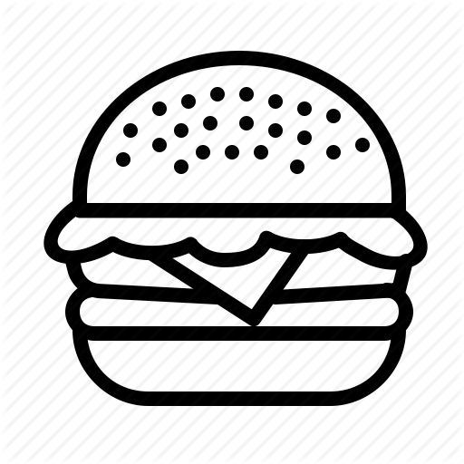

RECIPE
TIPS & GUIDELINES
KITCHEN ESSENTIALS
ABOUT US
OTHERS
☰
MEAT
PIZZA
PASTA
APPETIZER

BURGER
DESSERTS
DRINKS
THE LATEST
One-Skillet Salmon With Curried Leeks and Yogurt-Herb Sauce
DANIEL GRITZER
Tonkatsu or Chicken Katsu (Japanese Breaded Pork or Chicken Cutlets)
J.KENJI LOPEZ-ALT
Veneto-Style Radicchio Risotto with Walnuts and Blue Cheese
DANIEL GRITZER
Stir-Fried Lo Mein Noodles With Pork and Vegetables
EMILY AND MATT CLIFTON
Chocolate-Covered Digestive Biscuits (McVities)
STELLA PARKS
Cinnamon Raisin Bagels
STELLA PARKS
The Serious Eats Guide to Breakfast
VISIT PAGE
WHAT'S FOR DESSERT?
E.L. Fudge-Style Chocolate and Vanilla Sandwich Cookies
STELLA PARKS
Chocolate Cherry Layer Cake
STELLA PARKS
Stovetop Butterscotch Pudding
STELLA PARKS
Marbled Ganache for Easy Chocolate-Covered Strawberries
STELLA PARKS
Lofthouse-Style Frosted Sugar Cookies
STELLA PARKS
Made-From-Scratch Caramel Apples
STELLA PARKS